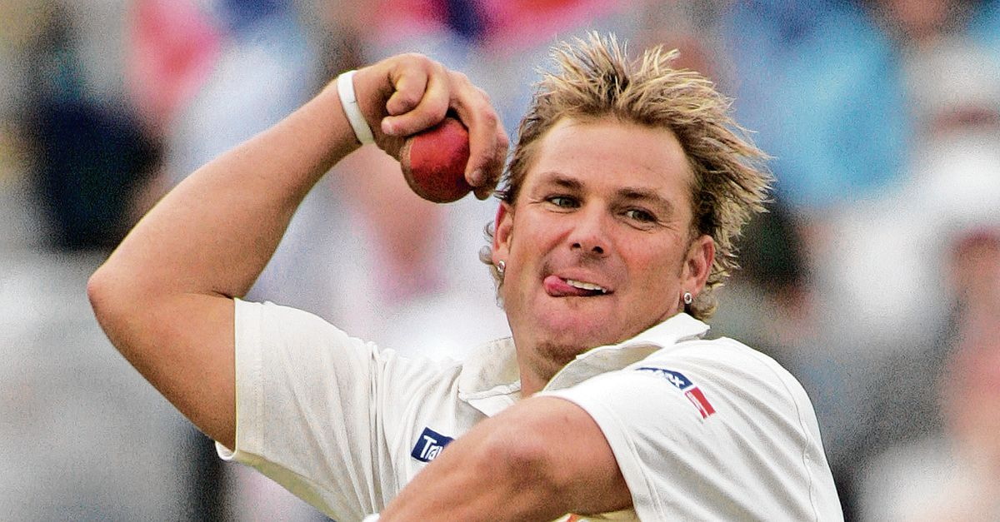
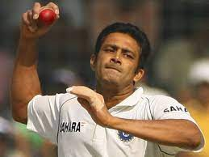

Shane Keith Warne was an Australian international Hall of Fame cricketer whose career ran from 1991 to 2007. Warne played as a right-arm leg spin bowler and a right-handed batsman for Victoria, Hampshire and Australia. He is widely acknowledged to have been one of the sport's greatest-ever bowlers; he made 145 Test appearances, taking 708 wickets, and set the record for the most wickets taken by any bowler in Test cricket, a record he held until 2007.
Warne was a useful, lower-order batsman who scored more than 3,000 Test runs, with a highest score of 99. He retired from international cricket at the end of Australia's Ashes series victory over England.
In the first four seasons of the Indian Premier League (IPL), Warne was a player-coach for Rajasthan Royals and also captained the team. During his career, Warne was involved in off-field scandals; his censures included a ban from cricket for testing positive for a prohibited substance, and charges of sexual indiscretions and bringing the game into disrepute.
Warne revolutionised cricket thinking with his mastery of leg spin, which was regarded as a dying art. After retirement, he regularly worked as a cricket commentator and for charitable organisations, and endorsed commercial products. In recognition of his skill, a statue of Warne bowling was placed outside the Melbourne Cricket Ground (MCG), where he was also honoured with a state memorial service. Warne was posthumously appointed as an Officer of the Order of Australia for his service to cricket.

2.ANIL KUMBLE
Anil Kumble is a former Indian cricket captain, coach and commentator who played Test and One Day International cricket for his national team over an international career of 18 years.[1] Widely regarded as one of the best leg spin bowlers in Test cricket history, he took 619 wickets in Test cricket and is the fourth highest wicket taker of all time as of 2022. In 1999 while playing against Pakistan, Kumble dismissed all ten batsmen in a Test match innings, joining England's Jim Laker as the second player to achieve the feat.[2][3][4] Unlike his contemporaries, Kumble was not a big turner of the ball, but relied primarily on pace, bounce, and accuracy. He was nicknamed "Apple" [5] and "Jumbo".[6] Kumble was selected as the Cricketer of the Year in 1993 Indian Cricket, and one of the Wisden Cricketers of the Year three years later.
Born in Bangalore, Karnataka, Kumble developed an early interest in cricket as he grew up watching players like B. S. Chandrasekhar before becoming a full-fledged cricketer. He made his First-class debut at the age of 19 while representing Karnataka. Soon he was picked up for the Austral-Asia Cup in 1990 before making his Test debut against England later that year. Since then he has represented the Indian Test team on more than 132 Test matches and was responsible for many of India's victories. Kumble became a part of the regular ODI team during the early 1990s and held some of the best performances during this time; which included his six for 12 (six wickets for 12 runs) against the West Indies. The year 1996 proved to very successful for him as he was selected for the World Cup and emerged as the most successful bowler of the tournament; he played seven matches and captured 15 wickets at an average of 18.73.
Kumble was awarded the Padma Shri, India's fourth-highest civilian honour in 2005. After having played for 18 years, he announced his retirement from international cricket in November 2008. In October 2012, Kumble was appointed the chairman of the International Cricket Council (ICC)'s cricket committee.[7]
Between 2012 and 2015, Kumble held positions as a chief mentor for the teams Royal Challengers Bangalore and Mumbai Indians in the Indian Premier League. He was also a former head coach of the Indian cricket team as well. In February 2015, he became the fourth Indian cricketer to be inducted into ICC Hall of Fame. Kumble is currently the Head Coach and the Director of Cricket Operations of Punjab Kings.[8]

3.MUTTIAH MURALIDHARAN
Deshabandu Muttiah Muralitharan is a Sri Lankan cricket coach, former professional cricketer, businessman and a member of the ICC Cricket Hall of Fame. Averaging over six wickets per Test match, Muralitharan is widely regarded as the most successful and one of the greatest bowlers to ever play international cricket. He is the only bowler to take 800 Test wickets and more than 530 One Day International (ODI) wickets. As of 2022, he has taken more wickets in international cricket than any other bowler.
Muralitharan's international career was beset by controversy over his bowling action. Due to an unusual hyperextension of his congenitally bent arm during delivery, his bowling action was called into question on a number of occasions by umpires and sections of the cricket community. After biomechanical analysis under simulated playing conditions, Muralitharan's action was cleared by the International Cricket Council, first in 1996 and again in 1999.
Muralitharan held the number one spot in the International Cricket Council's player rankings for Test bowlers for a record period of 1,711 days spanning 214 Test matches.He became the highest wicket-taker in Test cricket when he overtook the previous record-holder Shane Warne on 3 December 2007. Muralitharan had previously held the record when he surpassed Courtney Walsh's 519 wickets in 2004, but he suffered a shoulder injury later that year and was overtaken by Warne. Muralitharan took the wicket of Gautam Gambhir on 5 February 2009 in Colombo to surpass Wasim Akram's ODI record of 502 wickets. He retired from Test cricket in 2010, registering his 800th and final wicket on 22 July 2010 from his final ball in his last Test match.